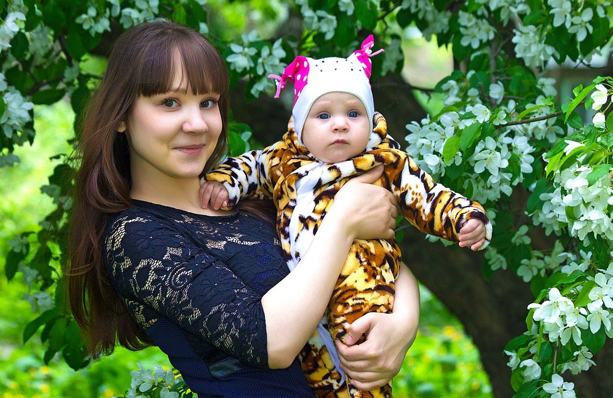

A criança com depressão

O existir natural da criança é ser alegre, aventureira, exploradora da natureza, do mundo, dos objetos, do corpo. A criança é um ser movido pela curiosidade, pelo prazer e excitação. Quando não brinca, não sorri, não tem ânimo, não demonstra
excitação, não deseja ter amigos é sinal de que está vivendo algo além de uma simples tristeza. A criança pode estar denunciando algo mais profundo e complexo, revelador de um quadro formado por sintomas de natureza física, cognitiva,
emocional e comportamental, que vêm afetando o seu mundo psicológico e prejudicando sua vida social. É natural a criança sofrer com a perda de seu bichinho de estimação, de seu brinquedo favorito, com a viagem ou mudança do melhor
amigo, com a transferência de escola, com a morte de pessoas significativas. No entanto, quando a criança mantém a tristeza como um estado afetivo-emocional constante e mostra uma instabilidade de humor com reações agudas de irritabilidade,
que guiam o seu modo de estar-no-mundo, podemos pensar que o ajustamento criativo inicial para lidar com as situações dolorosas passou a ser disfuncional e há necessidades afetivas primordiais que não estão sendo satisfeitas dentro
do campo familiar, o que pode estar retirando sua energia vital, esvaziando o seu eu e sofrendo assim uma depressão.
A reação de depressão invade o ser humano desde os anos iniciais de sua existência, quando experiencia separações,
rupturas, perdas afetivas precoces e principalmente quando não se percebe fonte de investimento amoroso na relação maternal primária. Ajuriaguerra e Marcelli (1986) discorrem sobre as manifestações depressivas da criança pequena (3
anos a 5-6 anos), da criança maior (5-6anos a 12-13 anos) e do adolescente, relacionando o surgimento da depressão à separação (dos pais, doença, breve hospitalização), a uma perda amorosa ou a remanejamentos psicoafetivos próprios
da idade.
A depressão é o transtorno de humor que se caracteriza basicamente por tristeza, desânimo, apatia e falta de prazer para realizar qualquer atividade habitual da vida (brincar, estudar, passear). Os comportamentos
problemáticos e os sinais clínicos que acompanham o sofrimento depressivo da criança, são: baixo desempenho escolar, retraimento social, pobre expressão afetivo-emocional, choro fácil, irritabilidade, baixa auto estima acompanhada
de pensamentos negativos sobre si, sentimento culposo, intolerância a perdas e frustrações, alto nível de exigência consigo. A alteração do humor geralmente é acompanhada de certas queixas físicas como cefaléia, tonturas, dores abdominais,
sensação de fadiga, enurese noturna, perturbação do sono e do. Como consequência, a criança apresenta inibição motora ou retardo psicomotor, pensamento lentificado, perda da concentração/déficit de atenção, possíveis falhas na memória,
configurando prejuízos no funcionamento motor, emocional e cognitivo.
A relação materna
A depressão reativa, então, emerge como um ajustamento defensivo às situações de perdas afetivas significativas ou de adaptação às adversidades circunstanciais existenciais. Irei, no entanto, tratar daquela que aparece como uma patologia
que toca as raízes da relação primitiva mãe-bebê e que leva o indivíduo a enveredar em uma eterna busca por alguém que venha a preencher sua sensação de vazio profundo. Falo da mãe que desde o início da gravidez não desejou o bebê
(seja por fatores subjetivos próprios, seja por interferências ambientais) e assim resistiu oferecer seu corpo-eu acolhedor de forma calorosa para estabelecer um diálogo tônico nutritivo com o corpo do bebê e transmitir-lhe a pulsão
de vida. A criança cresce sem capturar no olhar da mãe o brilho do desejo e da alegria por sua existência, sem escutar: “Que lindo! Você conseguiu! Como você é forte! Como você é bonita!”. Não mostra entusiasmo, nem vibração com as
conquistas, os ganhos, os desafios vencidos pelo seu filho. Essa criança não recebe os benefícios da função materna cuidadora que prioriza as suas necessidades e desejos infantis. Vivencia uma relação negligente, de ausência de amor,
onde há uma falta de investimento em seu potencial criador e na confirmação do seu eu.
Uma outra condição relacional que promove o estado depressivo decorrente do não investimento materno é a identificação da criança com a
mãe deprimida, que é incapaz de sintonizar com as necessidades organísmicas, afetivas e emocionais da criança, devido ao seu eu desnutrido e a sua carência afetivo-emocional. Essa mãe passa sua vida querendo ser figura na família,
ser o foco das atenções afetivas para viver a ilusão de estar sendo recebedora do cuidado materno que não teve na infância. E a criança, ao identificar-se, vive como se fosse a mãe, confundindo-se com aquelas partes depressivas introjetadas,
de tal forma que “o destino de um passa a ser o destino do outro”.
Mães depressivas não conseguem deixar-se invadir espontaneamente pela preocupação maternal primária, estado descrito por Winnicott (1993) como sendo a capacidade
de se colocar no lugar do filho e de responder às suas necessidades.
A criança, por não se ver desejada e perceber o “desencanto” da mãe com ela, desenvolve uma culpabilidade pela tristeza e males da família, carregando a
culpa como sentimento preponderante em suas relações pessoais, a qual toma conta da vida de fantasia da criança, que se sente responsável por não dar alegria, gratificação, realização à mãe. Assim, a criança traz consigo os dilemas
das polaridades conflitivas vida x morte, prazer x desprazer, poder x impotência, vivenciando profundos sentimentos de impotência para enfrentar e modificar situações de vida, uma falta de sentido para viver que lhe retira a vontade
de buscar o prazer (e cria a idéia de não ser merecedora de ter prazer e alegria), oriundos de uma sensação de vazio, de sentimentos de desilusão, desamparo e solidão existencial. Assim, a criança deprimida tem como temáticas conflitivas
a culpa, a impotência, a falta de desejo, que podem alimentar idéias autopunitivas e de morte.
A familia afeta como no desenvolvimento da depressão?
A criança que perdeu a mãe e mora com o pai, tendo que assumir responsabilidades domésticas (como cozinhar, lavar, arrumar a casa, etc.) e escolares consigo mesma e às vezes com irmãos menores, traz a tristeza e o desânimo em sua face
por se sentir sobrecarregada com os afazeres e se ver impedida de ser criança, de ter o direito de ter prazer/diversão, guardando assim a sensação de infância perdida. Embora encontremos pais afetivos e engajados em substituir a ausência
materna, a sua presença não é suficiente para suprir o buraco afetivo sentido pela falta de uma relação primária exclusiva de cuidado maternal.
Ainda observamos em algumas famílias a presença de um pai hostil que acusa, desqualifica,
despreza, ataca a auto-estima de forma destrutiva, deixando a criança com sentimentos profundos de desvalia. A base da depressão não é o sentimento de rejeição, mas sim as experiências de falta de vínculo de amor, de negligência e
desconfirmação. A criança depressiva sofre por não se sentir merecedora de ser amada (o que desperta o sentimento de rejeição), por não sentir-se valorizada, nem confirmada. Podemos afirmar que as figuras parentais de crianças deprimidas,
de um modo geral, são insuficientes, indisponíveis, inacessíveis para prover as necessidades afetivo-emocionais da criança por não conseguirem se oferecer como suporte, eco, continente da vulnerabilidade emocional da criança.
Sobre a Saber
A Saber Educacional iniciou suas atividades em abril de 2020, com o objetivo de oferecer atendimento clínico especializado a crianças, adolescentes e adultos
Nossas Redes Sociais